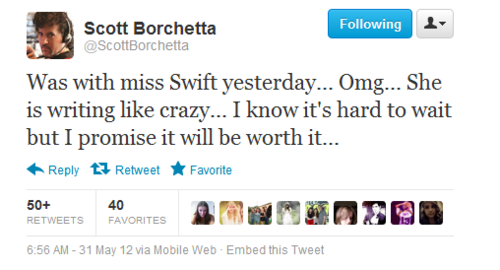
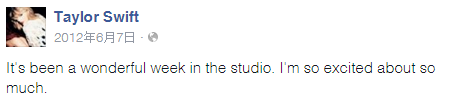
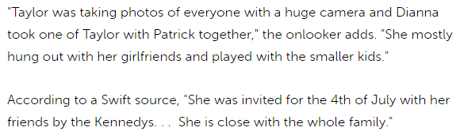
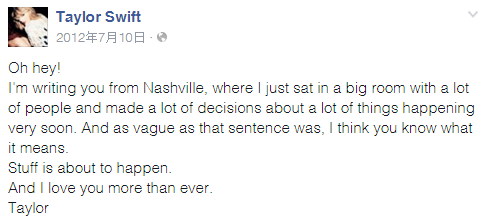

4. Stuff is About to Happen
5月31号，大机器老板Scott Borchetta发推说头一天见到了TS新专辑的成果，十分惊艳，敬请期待。
6月6号，TS在FB上说，这一周都泡在工作室，现在非常激动。
这是TS在RED发行之前最后一次进studio，Scott和她自己的话表明，RED到这里已经全部完成了。
在4月份之前TS为新专写了25首，到RED全部完成时她总共写了30-35首，最后有19首收录进RED。也就是她4、5、6这3个月不到的时间又写了5-10首歌，虽然没有都收录，可以自己判断哪些歌属于这段时期。
和Conor Kennedy有关吗？当然没有，他7月才出现。
插播一个花絮：
6月2号，DA参与主持了在旧金山举行的GLAAD(the Gay and Lesbian Alliance Against Defamation同志反诋毁联盟)颁奖典礼，义卖一个吻，主持人说“我们没有限制哟（意指男女不限）”，DA补充说："I've kissed girls before. It's fun"
5月15号之后，1个半月内再也看不到TS和DA在一起的记录，但TS照常和Ashley或Claire频繁出入。
7月2号，F4加上Claire的好朋友Roxy Olin，一行5人早上先在Nashville的Pancake Pantry吃早餐，TS和DA又穿情侣装，被路人/粉丝拍到合影，图1、图2、图3、图4。
{kind=link}
{kind=link}
{kind=link}
{kind=link}
晚上TS要去Tanglewood当James Taylor演出的表演嘉宾，她们下午先去演出地点陪TS排练，多个粉丝和DA有合影，图1、图2、图3。
{kind=link}
{kind=link}
{kind=link}
{kind=link}
{kind=link}
{kind=link}
7月3号，5人到Hyannis Port和Kennedy家族一起过国庆节。
TS很早前就看过肯尼迪家族的传记，很喜欢Ethel Kennedy（美国前总统约翰肯尼迪的弟弟罗伯特肯尼迪的遗孀），大概在2011年为Ethel写了一首Starlight并唱给她听。2012年1月19号在Artist at the table dinner and discussion活动中与Ethel的小女儿Rory Kennedy合影，1月20号在圣丹斯电影节出席纪录片< Ethel >的首映，与Ethel及家人合影。国庆节是Kennedy家族邀请TS及其朋友去Hyannis Port和他们一起度假。
{kind=link}
7月3号，TS和DA和Kennedy家的小孩子们玩抢旗子游戏，Ethel亲自开电瓶车载她们去码头坐船。
{kind=link}
{kind=link}
{kind=link}
{kind=link}
{kind=link}
Kennedy家的外孙女Kerry Townsend发推说：到外婆家发现她正在和Taylor Swift、Dianna Agron有说有笑的，希望我83岁的时候也能这么酷。
{kind=link}
7月4号，5个妹子继续在海边和Kennedy家一起玩，图1，图2，还参加了Kennedy家办的concert，在那里与Kennedy家族成员有很多合影，比如之后的几个绯闻对象。
{kind=link}
{kind=link}
7月5号，各路媒体开始报道TS和Patrick Schwarzenegger（阿诺.施瓦辛格的大儿子，Conor Kennedy的表兄弟）在dating，报道1，报道2，报道3。不要看错了，和TS打招呼拥抱的这个才是Patrick，旁边站的是Conor。这照片拍得真好，一下把2个都拍进去，真是一张照片两手准备。
{kind=link}
在报道中我们看到这么一段：
据TS那边的source说，是肯尼迪家族邀请TS和她的朋友们一起去过国庆节。
“TS拿着一个巨大的相机到处拍拍拍”，这相机是DA在5月份买的。“TS一直和她的女朋友们还有小孩子们一起玩”，这真是良心实话。
等等，还有一句，DA拍了TS和Patrick的合影，这张被各大媒体转载的照片是否就是DA拍的？如果是，那照片就是她们自己放给媒体的，TS和Patrick Schwarzenegger的绯闻就是又一场PR。
没两天Patrick的妈跳出来说让TS离她家儿子远点（我没去查这话是不是她亲口说的）
7月9号，Gossip Cop出来辟谣说TS和Patrick根本没在dating。
{kind=link}
一开始说在dating，现在又辟谣说没在dating，这不是穷折腾吗。有可能是Patrick的妈真不同意儿子和TS去PR，有可能是Patrick当时有gay传闻TS这边放弃了，有可能是双方没谈拢就取消了。取消？取消怎么行，换人！
参考阅读：Blind Gossip一则，一个父母都很有名的gay boy和一个女明星的PR关系、fake kiss，这段关系发生在2014年底-2015年初。底下评论清一色：
Boy是Patrick Schwarzenegger
Girl是Miley Cyrus
哈哈哈哈哈……Miley和Patrick“分手”没多久可就出柜和Stella Maxwell在一起了呢……
只有自己出柜了好寂寞，Miley还想“帮”曾经的好姐妹一把，2015年7月15号在INS上发了一张把TS和JB换脸的P图，在他们脸上tag了自己和女友，还附文"If you faceswap Justin Bieber and Taylor Swift, they look like a cute lesbian couple." 真是太坏了……
{kind=link}
TS直接在她INS下回了一句：sending you love
7月9号，除了在GC上辟谣外，TS发了一则FB
Oh hey!
我正在Nashville写这段给你，我和一大群人坐在一个大会议室里，做了很多决定，关于很多即将要发生的事。我含糊其辞，但我想你懂我的意思。
一切都要开始了
我比任何时候都爱你
Taylor
这段话对谁说？他们决定了什么？什么事即将发生？
她有对粉丝说，新专RED的事务在当天敲定，比如专辑、单曲发行的时间、顺序，封面、隐藏信息，宣传方式等等。首单8月13号就发行，这的确是即将发生的事。
但我想，她也有对DA说，一场动真格的PR必须要开始了，就在之后不久，马上，首单发布前。 Stuff is about to happen and I love you more than ever.
可以回头看一下她6月6号在FB上说自己完成新专辑时的语气和态度，那是相当兴奋和激动，再看看这一段。
为什么她一定要PR，还必须在首单发布前开始？
RED中所有疑似写前任的、分手的歌都可以归到Jake或其他哪个ex名下，但是新的开始呢？这些新的开始算在谁的头上，就算她自己不说别人也会猜也会问的，没有新男友大家可就乱猜咯，万一猜中了女朋友咋办。TS从2011年1月和Jake分手后她身边就再没有男朋友了，她要么别把Begin Again和EHC加到RED中去，如果她坚持要加，就得在新专发行前找个“新男友”，给观众一个交代。
RED中写给DA的歌，详情请看Chapter2 - RED
与大多数人不同，TS和DA的幸运数字都是13，她们有相同的音乐品味、穿衣品味、都擅长文字有才华，所有人都知道她们志趣相投，她们都是善良可爱的美女，就像彼此的镜子。如果她们没有在一起，一定会是十分契合的BFF，也许就是这精神上的契合让她们超越了BFF。
（KK和TS也很像，也是她的soul mate，她的mirror）
很多粉丝替TS恨嫁。她不缺钱，身边也多得是高富帅、白富美，我想如果有什么人能够吸引她，那个人一定能在精神和思想上与她共鸣，是灵魂伴侣，soul mate。
即使一切重来，有些人相遇后注定会相互吸引，TS还是会为她们写歌，她还是会坚持把这些歌放进新专，她的团队还是会按照他们的既定模式去运营，即使不是Patrick不是Conor也会是别的什么人，之后发生的事还是会发生，所有的一切在最开始，就注定了。
这是她必须付出的代价。
THEY PAID THE PRICE